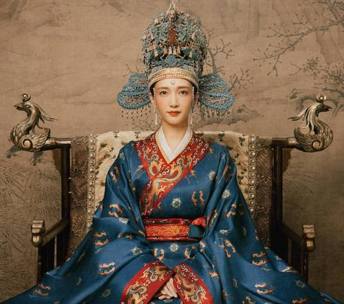
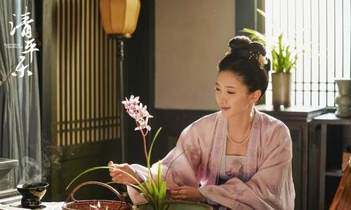

《清平乐》是由正午阳光影业、中汇影 视、腾讯视频联合出品，侯鸿亮制片，张 开宙执导，朱朱编剧，王凯、江疏影、任敏 杨玏、边程、叶祖新、武笑羽、喻恩泰、王楚 刘钧等主演的古装传奇剧。 该剧改编自米兰l ady的小说《孤城闭》，以北宋为背景，在 风起云涌的朝堂之事与剪不断理还乱的儿 女情长之间，还原了一个复杂而真实的宋仁宗 该剧于2020年4月7日在湖南卫视播出，并在腾 讯视频同步播出 |
.gif) |
魂穿大宋 |
|
|  | |||
《清平乐》改编自小说《孤城闭》，故事以北宋为背景，讲诉了宋仁宗时期风起云涌的 朝堂之事，与剪不断理还乱的儿女情长。还原了一个复杂而真实的宋仁宗。 宋仁宗这位皇帝，与众多历史上出名的帝王不同，他在历史上存在感并不高。同时代的 文人墨客范仲淹、王安石、欧阳修、晏殊，显然比他还有名。 宋仁宗是一位一名仁德，宽厚的千古明君，他在位期间，国家安定太平，经济繁荣，科 学技术和文化得到了很大的发展。 不过在剧中，他却是个很无奈的帝王，虽然在朝廷上是一位明君，可也懦弱；在家庭里 0是个“暖男”，可也多情；他有太多的决定要被身边的人左右。 宋仁宗13岁登基，刘太后垂帘听政十余年。宋仁宗逐渐长大之后，众官员上书请求刘太 后还政于“官家”，宋仁宗才开始亲政。 《清平乐》的故事从少年时代的宋仁宗赵祯讲起，首先出场的是宋仁宗、刘太后，以 及晏殊、吕夷简、韩琦、范仲淹、欧阳修等历史上的重要人物。事件是以朝堂戏为主， 曹皇后、苗心禾等爱情线中的女性角色作为辅线穿插其中。 |
 |